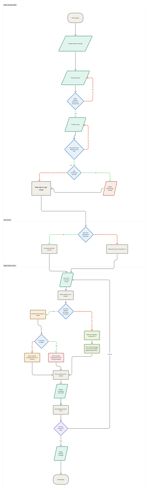

MoodBuddy is a Python program I wrote that asks a user for their name and age, lets them pick one of six moods (Happy, Sad, Angry, Lazy, Anxious, Excited) and replies with a message and a suggested activity matched to their age group. It saves every check-in to a JSON file, so it remembers each user, and it shows a gentle warning when the same negative mood keeps coming back. This document records the design thinking behind it, following the five Design 1 rubric criteria.
| Rubric criterion | Section |
|---|---|
| Create an Empathy Map | 1. Empathy Map |
| Document Research (3 sources) | 2. Research |
| Define a Purpose Statement | 3. Purpose Statement |
| Brainstorm Ideas (3) | 4. Brainstorm |
| Create a Conversational Prototype | 5. Conversational Prototype |
User: Sam, 21, a college student who also works part-time.
| Says | Thinks |
|---|---|
|
|
| Does | Feels |
|
|
| Pains | Gains |
| No time, forgets mood patterns, doesn't want to share feelings with people or big apps. | A check-in under a minute, one small activity to try, and a heads-up when bad moods repeat. |
I looked at two existing mood apps (market research) and one psychology study.
| Source | What I learned | How MoodBuddy uses it |
|---|---|---|
| Daylio: Journal & Mood Tracker Market · daylio.net |
Users log a mood with one tap and pick activities, with no writing needed. Streaks and statistics show patterns over time. | Six numbered mood choices; every check-in is saved with a timestamp and counted. |
| How We Feel Market · howwefeel.org, built with the Yale Center for Emotional Intelligence |
A free app that helps people name an emotion and then suggests a short strategy, such as a breathing exercise. | Every mood gets a message plus one suggested activity (for example, box breathing for anxiety). |
| “Putting Feelings Into Words” Research · Lieberman et al., 2007 |
A brain-imaging study found that naming a feeling (affect labeling) reduces the brain's emotional reaction to it. | The check-in itself helps: the user names their mood before getting a response. |
| What | A Python mood tracker: six moods, a message and an activity, and a saved history |
|---|---|
| Why | Naming feelings helps, and repeated negative moods should be noticed early |
| Who | Busy students, families and older adults, ages 4 to 100 (seven age groups, Child to Elder) |
| Idea | Description | Strength | Weakness |
|---|---|---|---|
| 1. Daily mood journal | The user writes a few lines each day in answer to a prompt. | Rich detail | Slow; Sam has no time to write |
| 2. Mood check-in with tracking and warnings (chosen) | Pick one of six moods and get a message and an activity; counts are saved, and a gentle warning appears if the same negative mood comes up three times. | Under a minute; remembers patterns | Less detail than a journal |
| 3. Daily reminder bot | Sends a scheduled quote or a reminder to take a break. | Nudges the habit | No tracking; needs a phone and notifications |
Why idea 2: it fits Sam's “no time” pain, uses quick numbered choices (Daylio), pairs a mood with an action (How We Feel) and makes naming the feeling the first step (Lieberman 2007).
Name one of six moods and get an age-appropriate message and activity in under a minute; spot repeating negative moods early.
| Purpose | Design feature |
|---|---|
| Under a minute | Name, age and one number for the mood. Invalid input simply asks again. |
| Right message for the person | Age maps to seven groups (Child, Preteen, Teen, Young Adult, Adult, Senior, Elder), so a 9-year-old and a 70-year-old get different words. |
| Name it, then act | Every mood gets a message and one activity to try. |
| Notice patterns early | Sad, Angry and Anxious are counted; if one comes up three times with no good mood in between, a gentle warning appears. Everything is saved to a JSON file. |
